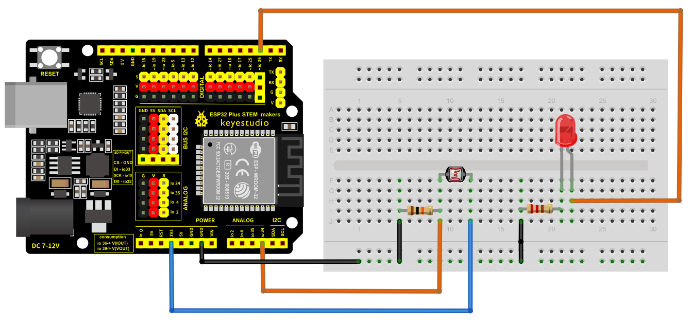
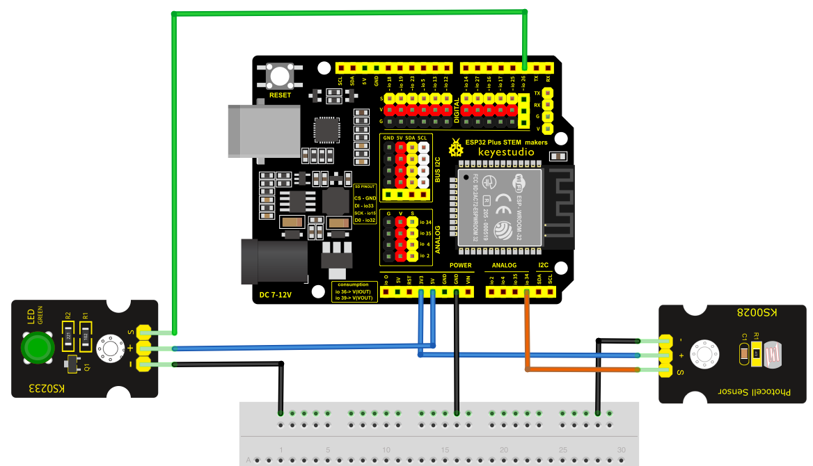

3. Sensor LDR
La fotoresistencia (LDR) pertenece a la familia de sensores anlógicos, es decir, aquellos que nos permiten medir magnitudes que varían suavemente: la intensidad de luz, la temperatura, la humedad del suelo, la fuerza ejercida. La mayoría de estos sensores básicos son Resistivos. Esto significa que varían su resistencia eléctrica según la magnitud física, en este caso nuestra LDR (Fotoresistencia) cuanta menos luz reciba más resistencia ejercerá al paso de la corriente.
Para leer un LDR, no basta con conectarlo directamente al pin correspondiente (no a uno cualquiera); necesitas medir cómo cambia el valor de su resistencia. Para ello, creamos un divisor de tensión añadiendo una resistencia normal (generalmente de 10KΩ) y se lee la variación de voltaje resultante utilizando el convertidor analógico-digital (ADC) de la placa.
¿Y por qué? pues porque el ADC de nuestra placa solo sabe medir voltaje, no resistencia. No puedes conectar una LDR directamente entre el pin y GND. No funcionará.
Advertencia
VCC (3.3V): Patilla 1 de la LDR.
Punto Medio: Patilla 2 de LDR + Resistencia 10k + Pin ADC.
GND: El otro extremo de la resistencia 10k.
3.1. El esquema

En el caso de que dispongamos de elementos de la marca KeyStudio podríamos montar el circuito de esta manera:

3.2. El programa
1from machine import Pin, ADC
2from time import sleep_ms
3
4ldr = ADC(Pin(34))
5
6
7while True:
8 # read_u16 devuelve el valor crudo entre 0 y 65535
9 nivel_luz = ldr.read_u16()
10
11 # Calculamos el porcentake para que sea más fácil de interpretar
12 porcentaje = (nivel_luz / 65535) * 100
13
14
15 print(f"Valor ADC: {nivel_luz} | Luz: {porcentaje:.1f}%")
16
17 # Pequeña pausa para no saturar
18 sleep_ms(500)
19
20
Puedes descargarte el archivo:
Descarga el archivo
3.3. El interruptor crepuscular
Vamos a unificar un par de conceptos ya adquiridos y crearemos un programa que encienda/apague un led en función de la luz recibida por la LDR (lo que viene siendo un interruptor crepuscular)


Montaje 1: Usando componentes estandar


Montaje 2: Usando elementos de KeyStudio
1from machine import Pin, ADC
2from time import sleep_ms
3
4ldr = ADC(Pin(34))
5GPIO_LED = 26
6
7led = Pin(GPIO_LED, Pin.OUT, value=0)
8
9while True:
10 # read_u16 devuelve el valor crudo entre 0 y 65535
11 nivel_luz = ldr.read_u16()
12
13 # Calculamos el porcentake para que sea más fácil de interpretar
14 porcentaje = (nivel_luz / 65535) * 100
15
16
17 print(f"Valor ADC: {nivel_luz} | Luz: {porcentaje:.1f}%")
18
19 if (nivel_luz < 40000):
20 led.value(1)
21 else:
22 led.value(0)
23
24 # Pequeña pausa para no saturar
25 sleep_ms(500)
26
27
Puedes descargarte el archivo:
Descarga el archivo